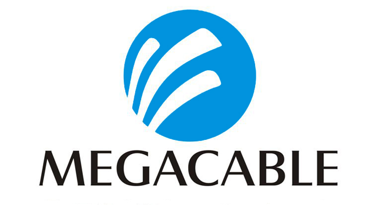
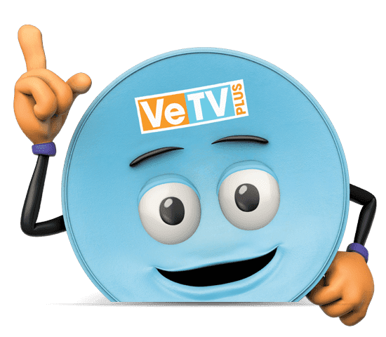

¡Descubre nuestros servicios de TV!
|  | Ofrece servicios de video, voz y datos a clientes del sector empresarial y corporativo. Entre estos servicios se encuentran: televisión digital, internet empresarial y dedicado, telefonía digital, redes privadas virtuales, entre otros. |
|  | Datos ilimitados para navegar, utilizar redes sociales, aplicaciones de transporte y descargar contenido. 66 canales en VeTV HD y 77 canales en HD Plus, en modalidad de prepago. Servicio hasta para 2 televisiones independientes y con su propio decodificador. |
Incluye un decodificador Android con el que podrás ver el streaming de las plataformas mencionadas y el servicio que como tal SKY ofrece. Incluye: Más de 80 canales en HD. ViX Premium, Star+ y HBO Max |
| REGRESAR |